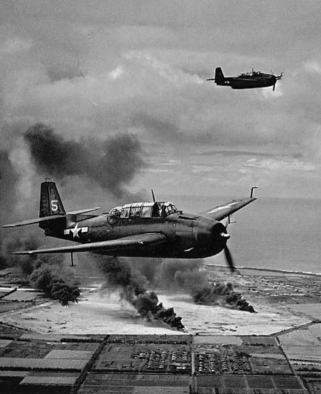
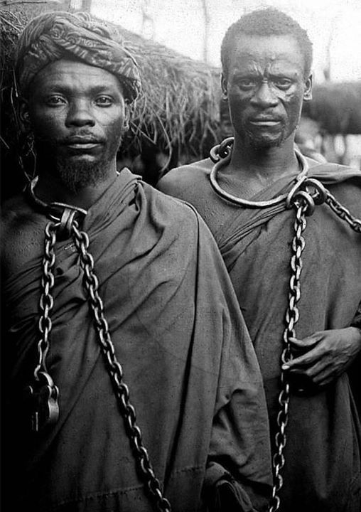
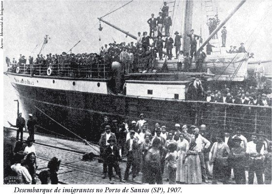
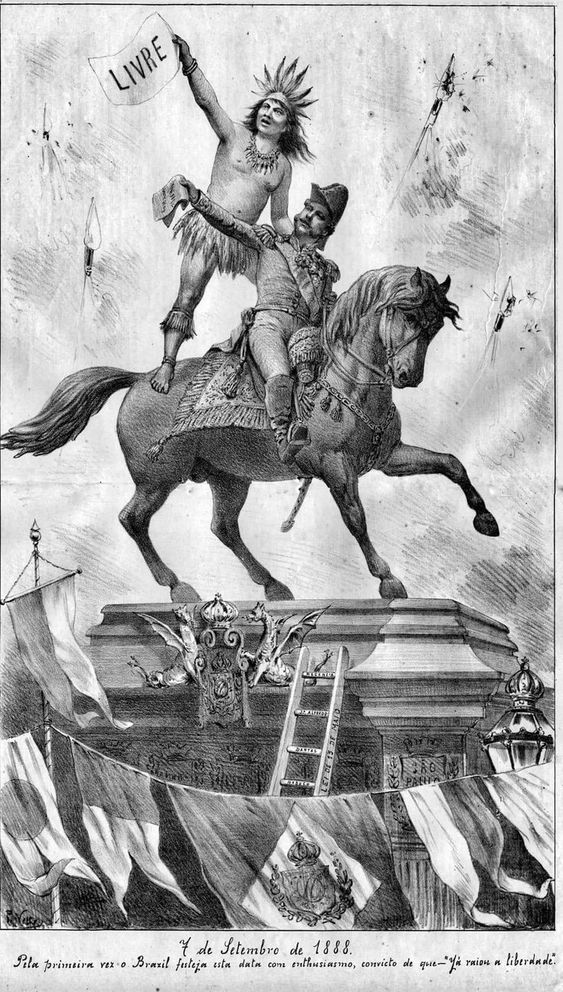

1 Guerra Mundial
13/10/2024

"A Primeira Guerra Mundial foi um marco na história da humanidade. Foi a primeira guerra do século XX e o primeiro conflito em estado de guerra total – aquele em que uma nação mobiliza todos os seus recursos para viabilizar o combate. Estendeu-se de 1914 a 1918 e foi resultado das transformações que aconteciam na Europa, as quais fizeram diferentes nações entrar em choque."
Leia mais
2º Guerra Mundial
13/10/2024

"A Segunda Guerra Mundial foi um conflito de proporções globais que aconteceu entre 1939 e 1945. Caracterizada como um conflito em estado de guerra total (no qual há mobilização de todos os recursos para a guerra), a Segunda Guerra Mundial fez Aliados e Eixo enfrentarem-se na Europa, África, Ásia e Oceania. Após seis anos de conflito, mais de 60 milhões de pessoas morreram."
Leia mais
Escravidão
13/10/2024

"A escravidão no Brasil iniciou-se por volta da década de 1530, quando os portugueses implantaram as bases para a colonização da América portuguesa, para atender, mais especificamente, à demanda dos portugueses por mão de obra para o trabalho na lavoura. Tal processo deu-se, primeiramente, com a escravização dos indígenas, e, ao longo dos séculos XVI e XVII, essa foi sendo substituída pela escravização dos africanos, trazidos por meio do tráfico negreiro."
Leia mais
Colonização
13/10/2024

"Sempre que ouvimos falar da colonização portuguesa na América, lembramos logo da colonização do Brasil. Será que o Brasil foi realmente descoberto pelos portugueses? Ou o processo de colonização portuguesa foi uma conquista?"
Leia mais
Independência do Brasil
13/10/2024

"A independência do Brasil aconteceu em 1822, tendo como grande marco o grito da independência que foi realizado por Pedro de Alcântara (D. Pedro I durante o Primeiro Reinado), às margens do Rio Ipiranga, no dia 7 de setembro de 1822. Com a independência do Brasil declarada, o país transformou-se em uma monarquia com a coroação de D. Pedro I."
Leia mais
grandes navegações
13/10/2024

"As Grandes Navegações foram navegações oceânicas realizadas ao longo do século XV que permitiram a exploração do Oceano Atlântico. Foram possíveis graças à acumulação de conhecimento náutico e à chegada de novas tecnologias que facilitaram a navegação. O país que possuiu as condições necessárias para iniciar as Grandes Navegações foi Portugal."
Leia mais